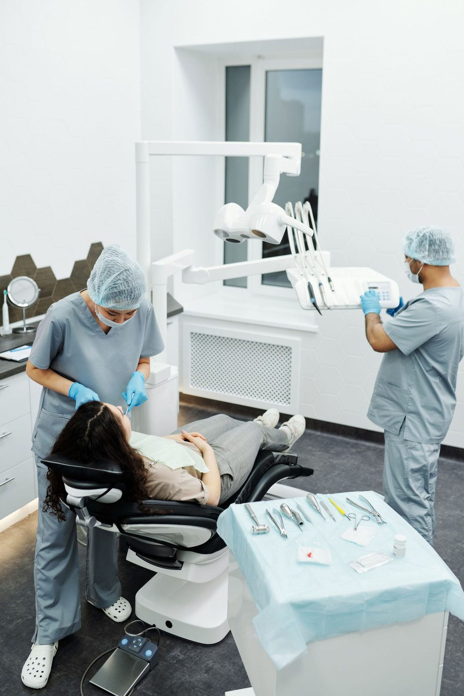

Familias
«Llevo a mis hijos con la Dra. y siempre han sido atendidos con profesionalismo», escribe una reseña de febrero de 2026.
Calle Mirlos 10 · Ecatepec
Un consultorio en Izcalli Jardines. Las reseñas hablan de doctoras pacientes, de precios accesibles y de un espacio limpio. También atienden a niñas y niños.



Fotos de stock de Unsplash y Pexels. No son del consultorio ni de sus pacientes.
No hay un menú oficial de especialidades en línea. Las reseñas de 2026 hablan de una doctora Blanca, de valoraciones claras, de avances en tratamientos que en otros lados se habían estancado y de un trato cuidadoso con los hijos.
«Llevo a mis hijos con la Dra. y siempre han sido atendidos con profesionalismo», escribe una reseña de febrero de 2026.
Varias opiniones repiten que explican el procedimiento y los precios con calma, desde la cita de valoración.
Lunes a viernes de 9:00 a 20:00 y sábados de 9:30 a 18:00. Domingo cerrado. Tienen Facebook público para avisos.
Una ficha intermedia muestra 5.0 con 68 reseñas; el listado de Maps de esta hoja tenía 153. El promedio coincide; el recuento no siempre.
“Muy buena dentista… yo tenía 3 años con una dentista que solo me daba largas […] decidí cambiar a la dentista blanca y todo cambió he visto un gran avance.”
Reseña en Google · marzo de 2026 · 5 estrellas
“Lo recomiendo muchísimo, la atención desde la cita de valoración super bien, te explican a detalle todo tu tratamiento, le doy 10000 estrellas.”
Reseña en Google · marzo de 2026 · 5 estrellas
“Muy buen servicio, precios accesibles, el consultorio muy limpio, las doctoras son muy amables y te explican todo detalladamente.”
Reseña en Google · marzo de 2026 · 5 estrellas
“Excelente atención, llevo a mis hijos con la Dra. y siempre han sido atendidos con profesionalismo, altamente recomendable.”
Reseña en Google · febrero de 2026 · 5 estrellas
Lunes a viernes de 9:00 a 20:00 y sábados de 9:30 a 18:00, según la ficha pública. Domingo cerrado.
Calle Mirlos 10, Izcalli Jardines, Ecatepec de Morelos, C.P. 55050. Coordenadas: 19.61063, −99.02064.
Sí. Hay reseñas de madres y padres que llevan a sus hijos. El nombre del consultorio lo sugiere, pero no encontramos un aviso de que sea exclusivamente pediátrico.
Teléfono o WhatsApp 55 2731 5005. También aparece una página de Facebook del consultorio.
No los mezclamos. Esta propuesta es solo para Dental Sonrisas Monstruosas, en Calle Mirlos 10.